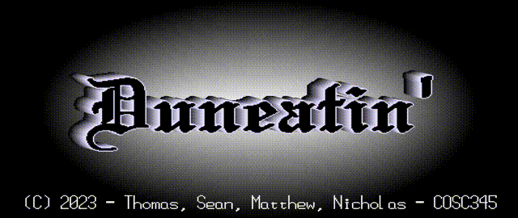
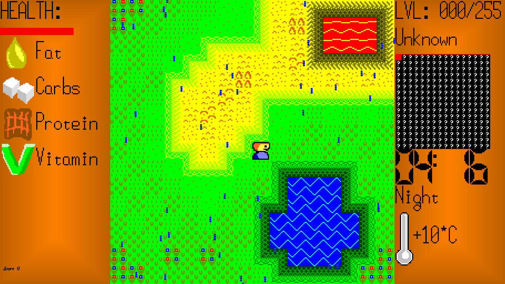

Duneatin'
A game in C using SDL2.
Explore Dunedin in New Zealand in a 2D top-down environment.
Here be dragons, so tread carefully.


Listen to the Overworld Theme, an 8-bit remix of "The Wellerman".
Your browser does not support this music file.